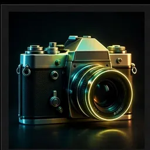

Blog
Guides and tips for writing better AI prompts — and getting the most out of every image and video you create.

Oct 30, 2026
How to Write Better AI Prompts: A Beginner's Guide
Most AI images fail because of the prompt, not the tool. Learn 5 simple rules — specificity, style, lighting, camera and mood — that turn vague ideas into stunning results.
Read guide →Oct 30, 2026
Best Cinematic Video Prompts for AI Video Generators
What makes an AI video look like a movie scene? Camera movement, lighting, lens choice and mood. Discover the formula — plus ready-to-copy cinematic prompts for Veo, Runway and Kling.
Read guide →Oct 30, 2026
Best AI Portrait Prompts for Stunning Photos
A great AI portrait starts with the right words: subject, expression, light, background and style. Learn the anatomy of a perfect portrait prompt — with examples you can copy today.
Read guide →